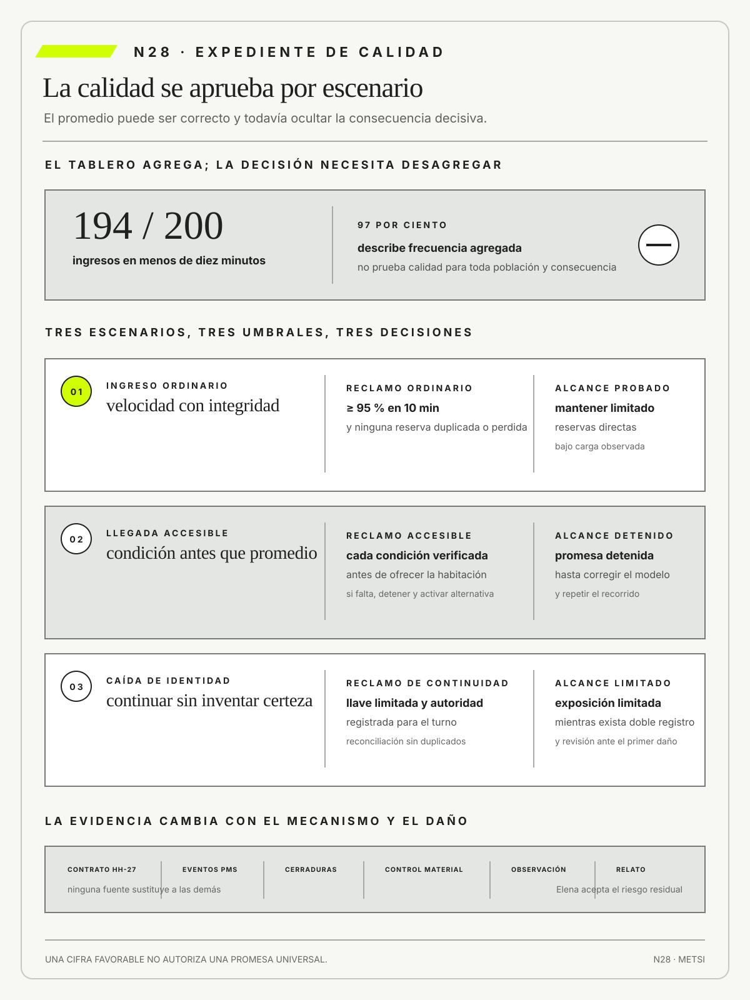

Len Bass
Software Architecture in Practice, Fourth Edition. Addison-Wesley · 2021
Relaciona decisiones de arquitectura con atributos de calidad observables mediante escenarios concretos.

La calidad sólo puede sostenerse para una población, un escenario y una consecuencia.
Evidencia de calidad según riesgo y atributos en tensión
Ruta de lectura: problema, distinciones, decisiones, prueba, transferencia y preparación.

Nota. SIN NUM. identifica aparatos de orientación y referencia.
Seis referentes y las obras principales utilizadas para construir N28.
Relaciona decisiones de arquitectura con atributos de calidad observables mediante escenarios concretos.

Explica seguridad como propiedad sistémica producida por controles, interacciones y restricciones, no sólo por ausencia de fallas de componentes.

Integra riesgo, costo y decisiones de ingeniería para priorizar evidencia según la consecuencia.

Aporta criterios de modularidad y responsabilidad que vuelven localizables los efectos de una falla.

Advierte que toda representación simplifica y que su utilidad depende de límites, propósito y contrastación.

Muestra cómo seguridad psicológica y aprendizaje de equipo condicionan la detección y corrección de problemas de calidad.
N28 no resume estas fuentes ni las convierte en receta. Las pone en tensión para construir juicio profesional.
¿Qué evidencia alcanza para sostener la calidad cuando confiabilidad, seguridad, accesibilidad, desempeño y capacidad de cambio no pueden maximizarse al mismo tiempo?

Si un promedio oculta daño severo o una población sin alternativa, la evidencia no autoriza la promesa.
Hotel Horizonte despliega una nueva regla de asignación. Las pruebas funcionales pasan, la cobertura aumenta y el tiempo promedio mejora. En el primer fin de semana completo, una huésped que usa lector de pantalla no puede confirmar la habitación y el turno nocturno tarda cuarenta minutos en reconstruir qué ocurrió.
El equipo había probado funciones, no la calidad de la promesa bajo riesgo. Accesibilidad, recuperabilidad, observabilidad y operabilidad quedaron fuera porque ningún defecto aislado impedía el despliegue. La evidencia respondía preguntas distintas de las que importaban.
La calidad no es perfección ni una suma de atributos. Es una afirmación situada sobre adecuación, acompañada por evidencia proporcional al daño y por decisiones explícitas cuando los atributos entran en tensión.
El equipo identifica escenarios críticos y formula reclamos de calidad. Para cada uno registra población, atributo, riesgo, evidencia, umbral, incertidumbre y autoridad. Las pruebas se complementan con observación, revisión, simulación y experiencia de uso.
La decisión cambia. El despliegue se limita hasta resolver accesibilidad y recuperación, mientras se conserva la mejora de desempeño en un segmento controlado. La tensión deja de resolverse por intuición o por el indicador más visible.
N28 recibe contratos verificables y pregunta qué confianza permiten sostener. La respuesta no es más prueba en abstracto, sino una arquitectura de evidencia gobernada por riesgo.

El tablero mensual informa que 194 de 200 ingresos, el 97 por ciento, recibieron habitación en menos de diez minutos y Camila Duarte propone comunicar la mejora. HH-28 utiliza el contrato asignable de HH-27 para revisar una muestra intencional de veinte episodios, que incluye los cuatro ingresos de personas que solicitaron una habitación accesible. Lucía Ferreyra muestra que dos de esos cuatro superaron media hora y uno terminó en reasignación. El cálculo agregado es correcto, pero su denominador y su diseño no sostienen una afirmación de calidad para la población cuya alternativa es más limitada.

Mariela Benítez reconstruye el episodio y determina que una habitación accesible estaba limpia pero sin el asiento de ducha registrado. Federico Müller muestra que el sistema de gestión hotelera (PMS) sólo conserva una marca binaria de accesibilidad y no las condiciones concretas de uso. Ricardo Sosa aporta tiempos, excepciones y recorridos manuales. La evidencia combina eventos, bitácoras, observación y relato de Recepción; ninguna fuente por sí sola explica el daño.
El argumento HH-28 formula escenarios para ingreso ordinario, llegada accesible y caída del servicio de identidad. Define respuesta esperada, umbral, población, incertidumbre y responsable. Elena Acosta decide no aprobar una promesa general de diez minutos. Autoriza un objetivo diferenciado, un control previo de equipamiento y una prueba de recuperación que incluye asignación manual segura. La velocidad deja de ser el único atributo: accesibilidad, confiabilidad y reparación condicionan el compromiso.
El resultado se revisará ante el primer incumplimiento severo o después de dos meses. Una mejora del promedio no compensará que una persona quede sin alternativa practicable. HH-29 recibirá estos escenarios y deberá demostrar que código, configuración, infraestructura, datos y aprobación pueden cambiar juntos sin perder la posibilidad real de volver o reparar.
La calidad no puede atribuirse a un sistema en abstracto: sólo puede sostenerse para una población, un escenario y una consecuencia mediante evidencia proporcional al riesgo y un umbral que haga visible qué atributo se sacrifica. Si un promedio favorable puede ocultar un daño severo o una población sin alternativa, la evidencia no autoriza la promesa; la decisión profesional es limitar la exposición hasta demostrar calidad situada y capacidad de reparación.
Un resultado agregado no autoriza una promesa general cuando una población crítica, una consecuencia severa o una capacidad de reparación exigen evidencia propia.

N27 volvió examinables los acuerdos que sostienen un intercambio. Sin embargo, un contrato puede cumplirse y producir una experiencia lenta, inaccesible o difícil de reparar. N28 desplaza la pregunta desde la conformidad hacia la calidad situada de la promesa.
El avance exige formular escenarios y reclamos que incluyan población, riesgo, atributos en tensión y evidencia suficiente. Esos reclamos no deciden todavía cómo liberar un cambio, pero establecen qué deberá demostrar la puerta de aprobación de N29.
ISO/IEC actualiza el modelo de calidad de productos y sistemas TIC.
ISO/IEC define calidad en uso desde resultados y contexto.
Bass, L., Clements, P. y Kazman, R. relacionan atributos de calidad con escenarios y decisiones arquitectónicas.
Basili, V. R., Caldiera, G. y Rombach, H. D. vinculan objetivos, preguntas y medidas.
ISO organiza principios y proceso de gestión de riesgo.
Pascoe, C., Quinn, S. y Scarfone, K. incorporan gobierno al manejo de riesgo de ciberseguridad.
Scarfone, K., Souppaya, M. y Dodson, D. integran prácticas de desarrollo seguro al ciclo de vida.
W3C define criterios verificables para accesibilidad del contenido web. La Convención sobre los Derechos de las Personas con Discapacidad amplía el alcance al entorno físico, la información, las comunicaciones y los servicios abiertos al público.
Beyer, B., Jones, C., Petoff, J. y Murphy, N. R. conectan confiabilidad, objetivos y operación.
Forsgren, N., Humble, J. y Kim, G. aportan evidencia empírica para evaluar conjuntamente velocidad, estabilidad y recuperación, sin convertir una métrica aislada en sinónimo de calidad.
ISO/IEC/IEEE define procesos de prueba a lo largo del ciclo de vida.
Leveson, N. analiza seguridad mediante controles y condiciones sistémicas.
Boehm, B. W. conecta decisiones de ingeniería con exposición al riesgo; Parnas, D. L. muestra por qué una propiedad debe evaluarse en las fronteras donde una decisión puede propagarse; Box, G. E. P. obliga a tratar modelos y métricas como aproximaciones; Edmondson, A. C. explica qué condiciones permiten que los equipos hagan visibles errores y señales débiles antes de que se normalicen.
La calidad situada expresa la adecuación de una capacidad para actores, propósitos y condiciones explícitas. No equivale a ausencia total de defectos ni a conformidad genérica con una lista. Una misma respuesta puede ser satisfactoria para una población y dañina para otra.
En Hotel Horizonte, el ingreso puede ser rápido y aun así inaccesible, inseguro o imposible de reparar. HH-28 observa recorridos ordinarios y adversos, incluidos turnos, canales y habitaciones con restricciones específicas. La propiedad se juzga por la consecuencia en uso, no sólo por el comportamiento de un componente.
Los propósitos compiten y requieren prioridades institucionales. El argumento declara qué población protege, qué nivel acepta y qué evidencia podría refutarlo. Así, «buena calidad» se transforma en una afirmación delimitada que una autoridad puede defender y revisar.
Situar la calidad obliga a declarar también desde qué momento y durante cuánto tiempo se sostiene la afirmación. Un recorrido aprobado con baja ocupación no autoriza la misma conclusión durante una fecha de alta demanda; una interfaz accesible en una pantalla puede dejar de serlo cuando aparece un mensaje de error. El expediente conserva entorno, versión, canales y apoyos disponibles. Esa información permite distinguir un defecto del sistema de una extrapolación indebida. Cuando cambia una condición relevante, se reabre el reclamo en lugar de mantener una etiqueta global que perdió relación con el uso.
Las voces que definen calidad no son intercambiables. Camila puede valorar conversión, Ricardo continuidad, Federico integridad y Lucía posibilidad de reparar frente al huésped. El análisis no promedia esos criterios: identifica la consecuencia que cada uno observa y la autoridad que posee. Las personas afectadas aportan límites que ningún tablero interno puede inferir. La decisión institucional debe explicar qué criterio prevalece en el escenario, qué costo acepta y qué población no puede quedar fuera de la evidencia.
Un atributo de calidad nombra una propiedad evaluable que influye en el valor y el riesgo del sistema. No es una aspiración sin medida. Confiabilidad, recuperabilidad, desempeño o accesibilidad adquieren significado cuando se vinculan con un escenario y una decisión.
HH-28 observa recuperabilidad ante una reserva indeterminada: cuánto tarda en detectarse, qué capacidad continúa y qué estado queda después. La medición combina umbral, fuente, ventana y población. Una única cifra rara vez representa todo el atributo y puede ocultar colas o daños extremos.
Elegir atributos también asigna atención y presupuesto. El expediente explica por qué una propiedad merece prioridad y qué tensión introduce sobre otras. Cuando cambia el uso, el riesgo o la población, la operacionalización debe revisarse aunque la métrica conserve el mismo nombre.
Un atributo se operacionaliza mediante más de una señal cuando el fenómeno lo exige. La recuperabilidad puede combinar tiempo hasta detectar, tiempo hasta restituir, cantidad de estados incongruentes y esfuerzo manual de conciliación. Ninguna medida aislada equivale al atributo. HH-28 construye una cadena entre la definición, las observaciones y la decisión que habilitan. Si una cifra mejora mientras aumenta el trabajo invisible, el argumento debe explicar si la capacidad realmente cambió o si sólo se desplazó el costo.
Las métricas indirectas necesitan una justificación explícita. Cobertura de pruebas, cantidad de incidentes o latencia pueden aportar evidencia, pero no prueban por sí mismas mantenibilidad, seguridad o experiencia. El equipo formula el mecanismo que conecta indicador y atributo y busca una observación que pueda contradecirlo. Esta exigencia reduce el uso ceremonial de medidas disponibles y vuelve visible dónde el conocimiento sigue siendo insuficiente. Un indicador sin destinatario ni decisión queda como contexto, no como evidencia de aprobación.
Un escenario de calidad describe estímulo, contexto, parte afectada, respuesta y medida esperada. Convierte una propiedad transversal en una situación comprobable. Se diferencia de un caso de uso ordinario porque incluye presión, falla y umbral de aceptación.
Durante un pico, identidad externa falla y Recepción debe mantener una vía segura dentro del tiempo acordado. HH-28 define antes de la prueba qué cuenta como continuidad, qué datos pueden omitirse y qué reparación se exige. Simulaciones y observación de turnos contrastan esa expectativa.
Un escenario no pretende representar todas las combinaciones futuras. Su selección se justifica por frecuencia, severidad, población y capacidad de aprendizaje. El conjunto necesita casos normales, límites y adversos para que la evidencia no dependa sólo de condiciones convenientes.
La estructura del escenario separa el estímulo de la respuesta esperada. «El sistema recibe muchas solicitudes y funciona bien» mezcla condición y juicio; «ante cuarenta llegadas en diez minutos, mantiene el ingreso accesible dentro del umbral y conserva reparación» permite observar. También identifica el entorno, porque el mismo estímulo puede requerir otra respuesta durante una caída de identidad. Las medidas incluyen calidad del estado final, no sólo duración. Así se evita aprobar una respuesta rápida que dejó una reserva duplicada o una restricción perdida.
Cada escenario se vincula con una fuente: episodio, incidente, amenaza, obligación o hipótesis. Esta procedencia permite discutir por qué merece prioridad y cuándo retirarlo. Los escenarios evolucionan con el sistema, pero las versiones anteriores se conservan para comprender qué evidencia sostuvo una decisión. Si un caso adverso nunca ocurre, todavía puede ser necesario por su severidad; si ocurre con frecuencia, deja de ser borde y debe entrar en la capacidad ordinaria. La cartera se revisa con esa distinción.
El riesgo de calidad combina incertidumbre y consecuencia sobre una promesa relevante. No se reduce a probabilidad técnica ni a severidad abstracta. Incorpora población expuesta, reversibilidad, duración, detectabilidad y capacidad de reparación.
Una reasignación de habitación accesible puede ser poco frecuente y producir una consecuencia alta. HH-28 evita que el promedio de ingresos oculte ese episodio. Incidentes, amenazas y análisis de impacto informan la estimación, que conserva supuestos y rangos en lugar de una precisión ficticia.
El riesgo prioriza qué evidencia y autoridad hacen falta. Una prueba reversible con población limitada admite incertidumbre distinta de un despliegue general. La estimación se revisa cuando aparece un modo de falla nuevo o cambia el contexto, y no se usa para convertir derechos en variables negociables.
Probabilidad y consecuencia se expresan con rangos y fuentes, no mediante una multiplicación que oculte incertidumbre. Dos riesgos con igual puntuación pueden exigir tratamientos distintos si uno es irreversible o afecta a una población sin alternativa. HH-28 registra detectabilidad, velocidad de propagación y capacidad de contención, porque determinan cuánto tiempo existe para actuar. El propósito de la estimación es elegir prueba, límite y autoridad, no fabricar una jerarquía exacta entre fenómenos incomparables.
El riesgo residual queda después de aplicar controles y debe ser aceptado por quien posee autoridad sobre la consecuencia. No basta con que Tecnología declare baja probabilidad si Operaciones absorberá la reparación. Elena recibe el escenario, las evidencias, los supuestos y la alternativa disponible. Puede limitar una sede, una población o una función mientras se aprende. La aceptación tiene fecha y señal de reapertura; sin esas condiciones, el lenguaje de riesgo puede normalizar una exposición que nadie volverá a discutir.
Un reclamo de calidad es una afirmación concreta sobre el comportamiento aceptable de una capacidad. Vincula escenario, atributo, umbral, evidencia y responsable. No es un eslogan de excelencia ni una certificación que se sostenga sin contexto.


HH-28 formula que el servicio recupera una reserva indeterminada sin perder accesibilidad. La frase debe aclarar población, ventana y condición de carga. Cada elemento de evidencia apoya una parte del reclamo y deja visibles sus límites, para que otra persona pueda reconstruir la inferencia.
El reclamo puede quedar refutado por un incidente o una población no cubierta. La revisión no borra la afirmación anterior: registra qué cambió y qué decisión deja de autorizar. Esa trazabilidad evita que «cumple» se transforme en una propiedad permanente del producto.
Una forma útil relaciona sujeto, comportamiento, condición, población y umbral. «La integración es confiable» no especifica nada; «durante una caída de identidad, el ingreso asistido conserva la restricción accesible y se reconcilia dentro de la ventana acordada» permite diseñar evidencia. El reclamo evita verbos vagos como soportar o garantizar si no puede indicar qué se observaría. También distingue la capacidad completa del componente cuya señal se utiliza, para no atribuir a una API el resultado producido por varias personas y sistemas.
Los calificadores hacen visible la incertidumbre sin vaciar la afirmación. «En la muestra observada», «para estas sedes» o «bajo esta carga» delimitan alcance; no deben usarse para excluir justamente el caso que origina la decisión. HH-28 conserva objeciones y datos contrarios junto con la conclusión. Si otra persona no puede reconstruir por qué esos elementos no refutan el reclamo, la formulación todavía no alcanza. La calidad del argumento depende tanto de sus límites como de la evidencia favorable.
La evidencia suficiente reúne observaciones proporcionales para tomar una decisión bajo incertidumbre explícita. No significa acumular la mayor cantidad posible de pruebas ni alcanzar certeza absoluta. Su fuerza depende de pertinencia, diversidad, independencia y reproducibilidad.
Pruebas automáticas, un ensayo operativo y una evaluación de accesibilidad pueden sostener el despliegue limitado de HH-28. Cada método cubre mecanismos distintos y conserva artefacto, versión y población. Resultados concordantes fortalecen la afirmación; discrepancias obligan a revisar el modelo, no a elegir el dato más cómodo.
La suficiencia crece con el costo de equivocarse y la irreversibilidad. También reconoce cuándo una nueva prueba ya no reduce la incertidumbre relevante. El cierre declara qué decisión habilita, qué no permite afirmar y qué señal exigirá ampliar o detener la intervención.
La diversidad de métodos importa cuando cubre mecanismos diferentes. Mil ejecuciones automáticas de la misma ruta no sustituyen una observación del turno si el riesgo está en la interpretación humana; seis entrevistas no prueban que una regla resista concurrencia. El argumento asigna a cada fuente una pregunta y reconoce sus sesgos. La triangulación no exige que todo coincida: una discrepancia entre registro y relato puede indicar trabajo no instrumentado o una definición distinta. Investigarla suele aportar más que sumar otra muestra homogénea.
La independencia también tiene grados. Dos informes construidos a partir del mismo registro no constituyen evidencias autónomas, aunque provengan de equipos distintos. HH-28 identifica datos compartidos, criterios comunes y personas que evaluaron. Para una decisión de alto daño incorpora revisión externa o participación de la población afectada. La suficiencia no se expresa como porcentaje de casilleros completos; se argumenta mostrando qué explicaciones rivales fueron discriminadas y qué incertidumbre sigue abierta.
La muestra de veinte episodios no se usa para estimar prevalencia de todo el mes. Fue seleccionada para reconstruir mecanismos, incluir casos accesibles y contrastar registros con la operación. El tablero de doscientos permite describir frecuencia agregada; los cuatro casos accesibles revelan una consecuencia que esa agregación diluye. Informar ambas bases evita dos errores: presentar 97 por ciento como propiedad universal y tratar dos casos adversos como estimación estable de una tasa poblacional. La severidad puede justificar detención aun cuando la frecuencia continúe incierta.
La ausencia de incidentes observados no prueba ausencia de riesgo cuando la muestra no expuso el mecanismo. Un ensayo puede no incluir caída de identidad, alta concurrencia o una condición accesible específica. HH-28 registra cobertura de escenarios y población junto con resultados, de modo que cero fallas no se interprete fuera de su envolvente. Cuando la consecuencia es severa y la exposición escasa, se recurre a simulación, análisis de propiedades y revisión experta antes de ampliar, sin presentar esas evidencias como equivalentes al uso real.
La cadena objetivo, pregunta y medida de Basili, Caldiera y Rombach (1994) ayuda a impedir que una métrica se independice de la decisión. El objetivo es sostener una llegada utilizable para poblaciones con alternativas distintas. Las preguntas examinan tiempo, integridad de la asignación, conservación de accesibilidad y capacidad de reparación. Las medidas incluyen proporción bajo umbral, distribución por población, reasignaciones, equipamiento faltante y tiempo total hasta reparación. Ninguna cifra aislada responde todas las preguntas.
La evidencia de usabilidad combina efectividad, eficiencia y satisfacción para personas, objetivos y contextos definidos. El éxito de tarea aporta una señal, pero necesita acompañarse con errores, tiempo, comprensión y asistencia. Una persona puede completar el ingreso porque otra resolvió cada paso. Contar solamente finalizaciones atribuye a la interfaz una capacidad que en realidad produjo el soporte humano.
La evidencia de accesibilidad no se limita a una inspección automática. WCAG 2.2 permite verificar propiedades del contenido web, mientras el uso con tecnologías de asistencia y los recorridos de personas diversas revelan barreras de interacción. El servicio completo agrega el entorno físico, el canal alternativo y la reparación. Una página puede cumplir criterios y conducir a una habitación incompatible; una habitación puede ser adecuada y quedar inaccesible por autenticación, señalización o espera.
La experiencia requiere seguir consecuencias antes, durante y después del contacto. Relatos, observación, abandono, reclamos y retorno pueden aportar evidencia, siempre que conserven población y contexto. Una escala de satisfacción agregada no muestra qué mecanismo produjo el resultado ni quién no pudo responderla. HH-28 enlaza cada percepción con un episodio y la contrasta con estados, tiempos y acciones de reparación.
El riesgo decide la intensidad del conjunto. Para un cambio reversible de contenido puede bastar inspección, prueba breve y monitoreo. Para una regla que afecta accesibilidad se necesitan casos dirigidos, participación de personas afectadas, prueba de excepción y autoridad para detener. El criterio no consiste en reunir todas las técnicas, sino en cubrir los mecanismos capaces de producir daño y declarar qué experiencia quedó todavía fuera de la evidencia.
Un oráculo de prueba establece cómo reconocer un resultado aceptable o una desviación significativa. No siempre existe una salida exacta conocida de antemano. Puede apoyarse en invariantes, propiedades, comparación, juicio experto o evidencia histórica.
En HH-28, varias habitaciones pueden ser válidas, pero la asignación debe respetar accesibilidad, estado y autoridad. El oráculo verifica esas restricciones y registra los casos dudosos. Casos límite y desacuerdos entre fuentes prueban la calidad del criterio con la misma seriedad que la ejecución técnica.
Un oráculo débil puede legitimar cualquier resultado. Por eso se define antes de observar la salida y se somete a revisión independiente. Si expertos razonables discrepan, el expediente conserva la incertidumbre y limita la decisión en lugar de forzar una etiqueta única.
Existen oráculos parciales. Una invariante puede rechazar una doble asignación sin decidir cuál de dos habitaciones válidas es preferible; una comparación histórica puede detectar una regresión sin demostrar el nivel correcto; una persona experta puede clasificar casos ambiguos con desacuerdo. HH-28 combina estas formas y documenta qué dimensión resuelve cada una. El resultado «inconcluso» forma parte del diseño cuando la evidencia no permite una etiqueta. Obligar al oráculo a elegir oculta justamente la incertidumbre que debe gobernarse.
La calidad del oráculo se evalúa con ejemplos límite, repetición y contraste entre evaluadores. Si cambia según quién observa, se revisan criterios y se conserva la divergencia relevante. También se comprueba que el evaluador no conozca la alternativa que se desea aprobar cuando eso pudiera sesgar su juicio. Un oráculo puede quedar obsoleto si cambian las necesidades de accesibilidad o la política operativa. Por eso su versión y autoridad se vinculan con cada resultado de prueba.
Confiabilidad y recuperación abarcan continuidad, detección, restauración y aprendizaje ante fallas. No son sólo disponibilidad promedio ni tiempo de reinicio. Deben seguir la promesa completa y el estado material que queda después de reparar.
El hotel necesita continuar el ingreso y reconciliar luego sin duplicar reservas ni perder una restricción accesible. HH-28 ensaya caídas, reintentos y retornos parciales. La medición incluye detección, degradación, intervención humana, restauración y verificación del resultado.
Una recuperación veloz puede ocultar pérdida de integridad o trasladar trabajo a Recepción. La decisión compara tiempos con calidad del estado y consecuencias distribuidas. El cierre exige un modo seguro, una persona con autoridad y evidencia de que la causa y los efectos quedaron comprendidos.
La confiabilidad del recorrido se descompone en prevención, tolerancia y reparación. Prevenir reduce fallas conocidas; tolerar conserva una capacidad mínima; reparar restaura estado y atiende la consecuencia. Invertir sólo en disponibilidad puede mantener componentes activos mientras el resultado permanece bloqueado. HH-28 mide desde la primera degradación percibida por el huésped hasta la restitución comprobada y distingue tiempo técnico de tiempo total de reparación. Esa diferencia revela esperas que los tableros internos no registran.
Los ensayos introducen fallas en condiciones controladas y con una salida segura. No se trata de provocar daño para aprender, sino de comprobar hipótesis antes de una exposición mayor. El equipo define alcance, observadores, criterio de interrupción y reconciliación. Después compara lo previsto con lo ocurrido y actualiza escenario, contrato o procedimiento. Si la prueba sólo confirma que la infraestructura reinicia, no demuestra que la reserva conserve significado ni que el turno pueda reparar al huésped.
Desempeño y capacidad describen respuesta y sostenimiento bajo cargas y patrones concretos. No se reducen a velocidad de laboratorio. Incluyen volumen, concurrencia, colas, variabilidad, recursos y forma de degradación.
HH-28 concentra llegadas, mezcla canales e introduce tareas manuales. Mide el recorrido de punta a punta, no sólo latencia de una API. Percentiles, tamaños de cola y tiempos por población revelan comportamientos que el promedio oculta, especialmente cuando la carga afecta accesibilidad o reparación.
El umbral se define por la promesa y el daño, no por la capacidad disponible. Si aumentar velocidad reduce verificación o desplaza espera a otro actor, el argumento registra la tensión. La prueba se repite cuando cambia la mezcla de demanda o una dependencia crítica.
Los percentiles muestran la distribución mejor que el promedio, pero también necesitan segmentación y volumen. Un percentil general puede ocultar que todas las demoras extremas pertenecen a un canal o una población pequeña. HH-28 informa tamaño de muestra, ventanas y casos excluidos, y conserva la serie para detectar cambios. Las colas se observan donde se forma la espera, incluida la tarea manual. Si la carga desaparece del sistema y reaparece en Recepción, el rendimiento técnico no mejoró el recorrido.
La capacidad se prueba hasta reconocer el modo de degradación, no para exhibir el máximo número posible. El objetivo es saber qué señal anticipa saturación, qué prioridad se aplica y cómo se recupera el atraso. Una política puede preservar ingresos accesibles durante el pico y posponer tareas menos urgentes. Esa elección requiere autoridad y comunicación. Si la prueba no incluye la decisión de priorización, sólo mide infraestructura y deja sin gobernar la consecuencia humana de la congestión.
Seguridad, privacidad y accesibilidad protegen derechos y participación y, por lo tanto, forman parte de la calidad desde el diseño. No son controles finales independientes de la experiencia. Una medida que excluye a la población que busca proteger es una solución incompleta.
En HH-28, una confirmación debe minimizar datos, resistir acceso indebido y funcionar con tecnologías de asistencia. La evidencia combina revisión especializada, pruebas técnicas y participación de personas afectadas. Un resultado agregado no sustituye verificar recorridos concretos y modos alternativos.
Los controles pueden entrar en tensión con continuidad o facilidad de uso. El expediente explica qué alternativa segura existe cuando un mecanismo falla y qué límites no son negociables. La autoridad debe justificar cualquier riesgo residual y abrir una vía efectiva de corrección.
La accesibilidad se verifica en el recorrido completo y con tecnologías, contextos y personas diversas. Cumplir una pauta en la pantalla inicial no compensa un mensaje de error inaccesible ni un canal alternativo que exige hablar por teléfono. La evidencia combina inspección, pruebas de uso y capacidad de resolver una barrera. Los hallazgos se clasifican por consecuencia y no sólo por cantidad. Una exclusión que impide ingresar requiere tratamiento aunque afecte a pocos casos observados.
La evidencia distingue dominios. WCAG 2.2 se aplica al contenido web y orienta interfaz, navegación, mensajes y compatibilidad con tecnologías de asistencia (W3C, 2023). No prueba que una habitación, un asiento de ducha o el circuito presencial resulten accesibles. Para esos aspectos, la Convención sobre los Derechos de las Personas con Discapacidad, en particular su artículo 9, exige considerar entorno físico, información, comunicaciones y servicios abiertos al público (Naciones Unidas, 2006). HH-28 combina inspección digital, verificación material del equipamiento, recorrido presencial y participación de personas afectadas sin presentar una fuente como sustituta de las otras.
Privacidad y seguridad aplican minimización y propósito, pero no deben utilizarse para negar explicación o reparación. HH-28 registra qué dato necesita cada decisión, durante cuánto tiempo y quién accede. El modo degradado evita copiar información sensible a planillas abiertas. Cuando una persona disputa un estado, el hotel puede mostrar la lógica operacional sin exponer datos de terceros. Esta combinación protege derechos sin construir una caja negra administrativa que nadie pueda corregir.
Mantenibilidad y evolutividad expresan la capacidad de comprender, cambiar y verificar un sistema sin riesgo desproporcionado. No equivalen a código limpio ni a velocidad de entrega. Incluyen modularidad, dependencias, pruebas, documentación y conocimiento distribuido.
Agregar un estado no debería obligar a coordinar simultáneamente todos los canales del hotel. HH-28 observa tiempo de cambio, tasa de falla, alcance de pruebas y capacidad de sustitución. Un ejercicio con ausencia de la persona experta muestra si el conocimiento pertenece al equipo.
La flexibilidad excesiva puede aumentar ambigüedad y costo. Por eso la arquitectura no optimiza cambio en abstracto: prioriza las variaciones plausibles y conserva trazabilidad. La evidencia se revisa después de una modificación real y no sólo mediante apreciación del diseño.
El tiempo de cambio se mide desde que aparece una necesidad hasta que la capacidad funciona y puede sostenerse, no sólo desde el primer código hasta el despliegue. Incluye comprender impacto, actualizar contratos, migrar datos, probar escenarios y transferir operación. HH-28 sigue una modificación del estado accesible y registra qué dependencias obligaron a coordinar. La evidencia muestra dónde la estructura favorece aislamiento y dónde una decisión compartida exige trabajo conjunto legítimo. Reducir toda coordinación no es una meta de calidad.
La distribución de conocimiento se prueba mediante rotación y reconstrucción. Documentación actual, pruebas legibles y decisiones registradas permiten que otra persona modifique sin repetir supuestos descartados. Si la ausencia de Federico detiene el cambio, el problema no es sólo de capacitación: puede existir una arquitectura irreconstruible o autoridad concentrada. La mejora se verifica con un cambio posterior realizado por otro integrante y con una comparación del efecto sobre fallas y tiempo de reparación.
Una tensión entre atributos aparece cuando mejorar una propiedad altera costo, riesgo o desempeño de otra. No es una excusa para aceptar cualquier compromiso. El análisis identifica qué cambia, para quién y bajo qué escenario.
Más verificación puede proteger integridad y aumentar espera; mayor velocidad puede reducir revisión; más telemetría puede afectar privacidad. HH-28 compara alternativas sobre una misma población y conserva resultados desagregados. La renuncia se registra con autoridad y condición de revisión.
Algunos derechos y límites regulatorios no se negocian como preferencias. Dentro del espacio permitido, la decisión debe explicar prioridades y riesgo residual. Una tensión bien formulada no produce una respuesta automática, pero evita que un atributo se optimice ocultando el costo impuesto a otro actor.
Las alternativas deben compararse sobre el mismo escenario. Evaluar seguridad con una carga y desempeño con otra impide ver el compromiso real. HH-28 prueba variantes que cambian un solo mecanismo relevante, conserva los demás supuestos y observa consecuencias desagregadas. Cuando eso no es posible, registra la diferencia y evita atribuir causalidad. El análisis incluye la opción de no cambiar, porque una optimización puede tener un costo de migración mayor que el beneficio esperado.
Una decisión de compromiso expresa qué se sacrifica, cuánto, para quién y hasta cuándo. «Balancear seguridad y usabilidad» no informa una elección. Elena puede aceptar una demora adicional para verificar un estado de alto impacto, siempre que exista una vía accesible y un umbral de espera. Si la evidencia muestra que el costo recae sólo en una población, la decisión se reabre. El registro impide que el compromiso desaparezca dentro de una métrica agregada o se presente como necesidad técnica inevitable.
Los modelos ISO/IEC 25010:2023 y 25019:2023 aportan vocabulario para calidad del producto y calidad en uso, pero no ordenan automáticamente atributos para un caso concreto. HH-28 usa escenarios, como proponen Bass, Clements y Kazman (2021), para localizar estímulo, contexto, respuesta y medida. Luego incorpora población, reparación y autoridad, dimensiones necesarias para decidir en el servicio. La clasificación sirve para preguntar mejor; la aceptación surge del argumento situado y no de completar una lista universal de características.
HH-28 estructura un argumento: cada reclamo de calidad debe apoyarse en evidencia proporcional al riesgo y reconocer la tensión que introduce. Completar casilleros no reemplaza la justificación de por qué esa evidencia alcanza para esta población y esta decisión.
El argumento se somete a una llegada anticipada que requiere habitación accesible durante la caída de identidad. Si el promedio permanece aceptable pero esa persona queda sin alternativa segura, el reclamo de calidad debe rechazarse o acotarse.
El instrumento se construye en sentido doble. Desde la promesa hacia abajo identifica escenarios, atributos y evidencias; desde cada evidencia hacia arriba pregunta qué afirmación permite sostener y qué decisión puede autorizar. Si una prueba no llega a un reclamo, puede ser información útil pero no justifica la liberación. Si un reclamo no encuentra evidencia, permanece como hipótesis. Las tensiones aparecen al comparar columnas para la misma población, no en una lista separada que nadie utiliza al decidir.
La revisión incluye un caso contrario al resultado favorable y una persona ajena al equipo que reconstruye el razonamiento. Esa lectura debe poder localizar fuente, versión, umbral y autoridad, además de entender por qué una evidencia adversa no refutó la conclusión. El expediente registra riesgo residual y alcance autorizado. Cuando se amplía sede, canal o población, no se copia la aprobación anterior: se examina qué parte del argumento sigue vigente y qué escenario adicional debe probarse.
La versión completada de HH-28 formula tres escenarios. En ingreso ordinario, ante cuarenta llegadas en diez minutos, el servicio debe entregar o iniciar una reparación explicada dentro del umbral, sin duplicar reserva. En llegada accesible, la condición material específica debe verificarse antes de prometer la habitación y la alternativa no puede exigir un canal impracticable. Durante una caída de identidad, el turno debe preservar restricciones, emitir una llave limitada mediante autoridad registrada y reconciliar el estado sin duplicar cobro ni asignación. Cada escenario identifica población, carga, fuente, respuesta y medida.
El primer reclamo afirma que, bajo la carga observada y para reservas ordinarias directas, al menos 95 por ciento de los ingresos concluye en diez minutos y ninguno pierde integridad de reserva. El segundo no adopta un porcentaje con sólo cuatro casos: exige que toda habitación ofrecida como accesible tenga verificadas las condiciones solicitadas y que cualquier falta detenga la promesa y active una alternativa practicable. El tercero establece una ventana de recuperación y un invariante de reconciliación. Los umbrales se justifican por consecuencia y tamaño de evidencia, no por simetría visual entre filas.
La evidencia enlaza el contrato HH-27, eventos del PMS, bitácora de cerraduras, control material de Housekeeping, observación del turno y relato de la persona afectada. Las pruebas automáticas verifican duplicados y estados; el ensayo operacional comprueba permisos y reparación; la evaluación de accesibilidad cubre pantalla, comunicación, equipamiento y recorrido. Ricardo conserva la procedencia de cada elemento; Mariela valida condiciones de accesibilidad; Lucía puede detener; Elena acepta riesgo residual sólo para el alcance probado. Una revisión independiente reconstruye cómo cada evidencia sostiene o limita el reclamo.
El resultado autoriza mantener el objetivo ordinario como descripción acotada, no como promesa general. La población accesible queda fuera de esa comunicación agregada hasta corregir el modelo binario del PMS, verificar equipamiento y repetir el recorrido. La caída de identidad sólo admite exposición limitada mientras la conciliación dependa de doble registro manual. El primer incumplimiento severo o un cambio de población reabre el argumento. Así, HH-28 deja a N29 criterios de aprobación diferenciados y no una lista genérica de pruebas aprobadas.
Un sistema de priorización clínica debe responder rápido, proteger datos, ser accesible y permitir intervención profesional. Ningún atributo puede evaluarse fuera del daño posible.
El argumento combina pruebas, simulaciones, revisión clínica, evaluación accesible y monitoreo limitado. El despliegue se acota si una población queda sin evidencia suficiente.
La unidad de análisis es una decisión de priorización completa, con información disponible, recomendación, intervención profesional y consecuencia. La muestra incluye síntomas atípicos, dificultades de comunicación y momentos de alta demanda. Un modelo puede acertar la categoría promedio y fallar en casos cuyo retraso produce mayor daño. Por eso la autoridad clínica define umbrales por severidad y una vía de revisión inmediata. El monitoreo no se usa para experimentar sin límite: conserva condiciones de detención, reparación y comunicación a quienes resulten afectados.
Cada ampliación exige nueva evidencia contextual.
HH-28 evita usar precisión promedio como sustituto de calidad integral.
Un equipo informa cobertura completa y cero defectos críticos antes de liberar.
La suite no incluye fallas de terceros, tecnologías de asistencia, recuperación ni carga extrema. La medida describe el código ejercitado, no la promesa sostenida.
La evidencia vale por la afirmación que permite defender y por los límites que conserva.

La calidad no posee un óptimo universal: seguridad, accesibilidad, desempeño y evolutividad pueden exigir decisiones incompatibles.
La perfección abstracta no ayuda a decidir qué evidencia alcanza para un uso. Calidad exige declarar población, escenario, atributo y riesgo residual aceptado.
Una carga o una entrada aislada no expresa contexto ni respuesta esperada. Sin escenario, el resultado no puede conectarse con una promesa.
Ejecutar muchas pruebas semejantes puede dejar intacta la incertidumbre crítica. La confianza depende de diversidad relevante, oráculos y severidad, no sólo de cantidad.
El promedio puede mejorar mientras empeoran accesibilidad, recuperación o un turno específico. Los resultados deben desagregarse según la distribución del daño.
La baja frecuencia no vuelve irrelevante una necesidad de alto impacto. Una habitación accesible requiere evidencia propia aunque represente pocos casos.
Observar el resultado antes de fijar aceptación permite acomodar el criterio al dato. El umbral se justifica por consecuencia y se define antes de probar.
Mejorar integridad puede aumentar espera; aumentar velocidad puede reducir revisión. El argumento debe mostrar qué costo se acepta y para quién.
Más capturas, métricas o certificados no fortalecen un reclamo si no discriminan su riesgo. La suficiencia es proporcional, no volumétrica.
Un laboratorio no reproduce presión, turnos ni reparación. La calidad operacional necesita ensayos donde las personas realmente tomen decisiones.
Una evaluación válida hoy puede perder alcance por nuevas poblaciones, versiones o dependencias. La fecha y el desencadenante de revisión integran el reclamo.

N28 transforma «tener calidad» en reclamos acotados que pueden sostenerse o refutarse. La práctica profesional selecciona evidencia por riesgo, desagrega consecuencias y hace explícito qué atributo se sacrifica al mejorar otro.
Esto modifica cómo se acuerda la aceptación. Una lista genérica de requisitos se reemplaza por escenarios que nombran estímulo, entorno, respuesta y medida. La misma latencia puede ser admisible para una consulta y peligrosa para una contingencia; el mismo porcentaje de disponibilidad puede ocultar que las fallas se concentran durante el ingreso. Quien decide debe conocer la población y la consecuencia detrás del umbral. La prueba se diseña para sostener una decisión concreta, no para producir un número favorable que pueda reutilizarse fuera de contexto.
La evidencia se organiza como argumento. Un reclamo de accesibilidad se apoya en inspección, uso con tecnologías de asistencia y episodios de personas diversas; uno de resiliencia exige fallas inducidas, recuperación y capacidad del turno. Cada fuente cubre mecanismos distintos y conserva límites. La convergencia aumenta confianza, pero una contradicción no se promedia hasta desaparecer. Si la experiencia de Lucía desmiente el tablero, el equipo investiga qué población o etapa quedó fuera antes de declarar satisfecho el atributo.
La severidad determina profundidad y autoridad. Un error reversible de presentación puede tolerar una muestra pequeña; una decisión que impide acceso o produce daño irreversible necesita mayor cobertura, supervisión y salida. Esta proporcionalidad evita gastar la misma energía en todos los defectos y, al mismo tiempo, impide que la frecuencia baja vuelva invisible un evento grave. El expediente registra quién acepta el riesgo residual, qué evidencia consideró y qué condición obligaría a revisar el permiso.
La calidad no posee un óptimo universal: seguridad, accesibilidad, desempeño y evolutividad pueden exigir decisiones incompatibles. Un umbral aceptable para explorar puede ser insuficiente para una capacidad estable o para una población expuesta a daño irreversible.
Las tensiones no siempre se resuelven optimizando una métrica común. Cifrar más información puede aumentar seguridad y reducir rendimiento; validar cada excepción puede mejorar exactitud y aumentar espera; conservar trazas puede favorecer investigación y elevar riesgo de privacidad. N28 exige hacer visibles esas consecuencias y asignar la decisión a una autoridad legítima. Una compensación no es un defecto que deba ocultarse, sino una elección que necesita población, horizonte, alternativa y condición de revisión.
La medición puede alterar el comportamiento que intenta observar. Si el equipo es evaluado sólo por velocidad, clasificará excepciones para proteger el indicador o trasladará trabajo fuera del sistema. Por eso las medidas combinan resultado, proceso y señales de equilibrio, y se contrastan con episodios. Una mejora estadística sin mecanismo plausible no habilita una conclusión causal. La pregunta profesional no es únicamente cuánto cambió, sino qué acción produjo el cambio y qué otra consecuencia pudo quedar fuera del instrumento.
Desagregar también requiere cuidado. Los grupos pequeños permiten revelar desigualdad y pueden exponer identidades o producir estimaciones inestables. El diseño combina categorías relevantes, revisión cualitativa y reglas de acceso, y declara incertidumbre. No presentar un corte por falta de tamaño muestral no equivale a afirmar igualdad. Puede exigir una prueba dirigida o limitar el uso. La privacidad y la evidencia no son objetivos opuestos por definición, pero su articulación necesita decisiones explícitas y una justificación proporcional al daño posible.
Por último, ninguna batería de pruebas representa todo el futuro. Cambian carga, datos, integración, población y prácticas. La aceptación conserva una vigencia y un conjunto de señales que obligan a volver a probar. Una versión puede seguir siendo técnicamente idéntica y perder calidad cuando el contexto altera el significado del resultado. Gobernar calidad significa mantener abierta esa relación entre reclamo y evidencia, no convertir una certificación histórica en permiso permanente.
Los reclamos y escenarios de N28 sólo protegen la promesa si condicionan qué cambio llega a operación, sobre qué población y con qué salida. N29 los convertirá en puertas de aprobación, exposición progresiva y mecanismos de recuperación para código, configuración, datos e infraestructura.
La calidad se argumenta mediante una cadena explícita: promesa, población, escenario, atributo, riesgo, reclamo y evidencia. Un resultado sólo habilita el alcance para el cual esa cadena conserva validez.
La suficiencia no significa certeza ni volumen máximo. Significa que la autoridad puede aceptar un riesgo residual conocido sin ocultar una población crítica o una tensión entre atributos.
El expediente de calidad debe permitir reconstruir por qué una evidencia habilitó una decisión y no otra. Incluye la versión probada, el escenario, la población, la fuente, el resultado, la incertidumbre y la autoridad que acepta el riesgo. También conserva pruebas que fallaron y explicaciones rivales, porque excluirlas produce una confianza imposible de auditar. La aceptación puede autorizar exploración, uso asistido o ampliación limitada sin declarar que el sistema posee calidad universal. Cuando cambia el contexto, el reclamo vuelve a ponerse a prueba. Así, N28 convierte la calidad en una relación viva entre consecuencias y evidencia, capaz de orientar inversión y detención sin reducir la discusión a cumplimiento documental o a una cifra agregada.
Cada nueva población obliga a revisar la suficiencia de esa evidencia situada.

Calidad situada: calidad situada es la adecuación de una capacidad para actores, propósitos y condiciones explícitas.
Atributo de calidad: un atributo de calidad nombra una propiedad evaluable que influye en el valor y el riesgo del sistema.
Escenario de calidad: un escenario de calidad describe estímulo, contexto, componente afectado, respuesta y medida esperada.
Riesgo de calidad: riesgo de calidad combina incertidumbre y consecuencia sobre una promesa relevante.
Reclamo de calidad: un reclamo de calidad es una afirmación concreta sobre el comportamiento aceptable de una capacidad.
Evidencia suficiente: evidencia suficiente es el conjunto proporcional de observaciones que permite una decisión bajo incertidumbre explícita.
Oráculo de prueba: un oráculo de prueba establece cómo reconocer un resultado aceptable o una desviación significativa.
Confiabilidad y recuperación: confiabilidad y recuperación expresan continuidad, detección, restauración y aprendizaje ante fallas.
Desempeño y capacidad: desempeño y capacidad describen respuesta y sostenimiento bajo cargas y patrones concretos.
Seguridad, privacidad y accesibilidad: seguridad, privacidad y accesibilidad son condiciones de calidad que protegen derechos y participación.
Mantenibilidad y evolutividad: mantenibilidad y evolutividad expresan la capacidad de comprender, cambiar y verificar sin riesgo desproporcionado.
Tensión entre atributos: una tensión entre atributos aparece cuando mejorar una propiedad altera costo, riesgo o desempeño de otra.
Para el encuentro, formular un reclamo de calidad sobre una capacidad conocida o utilizar los escenarios completados en HH-28. Definir población, umbral y evidencia, y señalar una tensión que la decisión no puede eliminar.